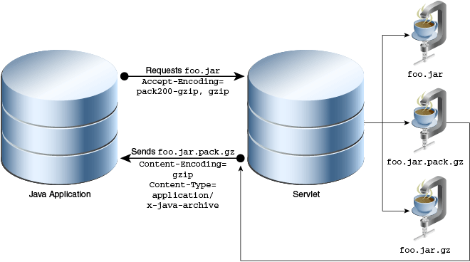
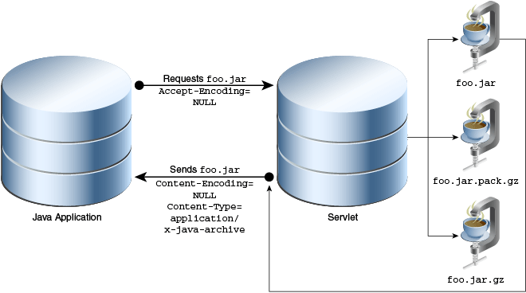

This topic provides information on setting up a proxy, and using the Pack200 tool for your Java applications.
This topic includes the following sections:
For enterprise customers it is important to be able to set up secure computing environments within their companies, and proxy configuration is an essential part of doing that. Proxy configuration acts as a security barrier; it ensures that the proxy server monitors all traffic between the Internet and the intranet.
Proxy configuration is normally an integral part of security enforcement in corporate firewalls within intranets. Enterprise customers who want to use Java Plug-in to deploy applets, or Java Web Start to run applications on their intranet web pages can also set up proxy support. This support is required for Java Plug-in and Java Web Start to work in an intranet environment and can be set up through the Java Control Panel.
The Java Control Panel provides four proxy options through the Network Setting dialog, which is accessed by clicking Network Settings in the General tab:
Use browser settings
Use proxy server
Use automatic proxy configuration script
Direct connection
If Use browser settings is selected, then proxy information is obtained entirely through the browser. To change proxy information, see the documentation for your browser:
Internet Explorer:
Change proxy settings in Internet Explorer (Windows Vista, Windows 7, Windows 8)
Configure Proxy Settings for Internet Explorer (Windows Server 2008 R2)
Firefox: Change proxy settings in the Options window - Advanced panel
Chrome: Chrome uses the same connection and proxy settings as Windows; follow the same steps as you would with Internet Explorer
If you select Use proxy server in the Java Control Panel, you have two choices:
Set the Address and the Port for a proxy server with the option to bypass it for local addresses.
Individually set the proxy server for HTTP, Secure, FTP, and Socks connections. You can also provide a list of addresses for which you do not want to use a proxy server.
If you select Use automatic proxy configuration script, then you must enter the URL for the location of the JavaScript method called FindProxyForURL(URL url) that returns the proxy server to be used for a URL. Support for this script is the same as described in Section 30.1.4, "Automatic Proxy Configuration."
Because browsers on different platforms store proxy information differently, there is no generic mechanism to obtain proxy information. Here is how proxy information is obtained from Internet Explorer and Firefox on Windows:
Internet Explorer: Internet Explorer obtains proxy information from the same set of keys in the Windows registry. Java Plug-in and Java Web Start extract this information directly from the registry.
Firefox: Firefox stores proxy information in a preference file under the user profile directory on the local machine. Firefox also has public APIs available for determining proxy information. Java Plug-in uses these public APIs to obtain the proxy information; Java Web Start obtains the proxy information through reading and parsing the preference file.
Java Plug-in and Java Web Start obtain proxy information at startup time. If you change the proxy settings after Java Plug-in or Java Web Start have started, you may force reloading of the proxy information from the browser through the p option in the Java Console. Java Web Start is restarted for each application, so new proxy information will be used automatically on subsequent launches.
Internet Explorer, Firefox, and Chrome support manual proxy configuration. Users can specify the proxy server and port for each protocol. Users can also specify one proxy server and port for all protocols. To minimize the workload of the proxy server, some sites might bypass the proxy server completely when a machine is connecting to another machine inside the intranet environment. To do this, network administrators and users can specify a proxy server bypass list in the browser's proxy setting.
Internet Explorer: Java Plug-in and Java Web Start recognize and supports the proxy server and port setting associated with the protocol. IE supports various syntaxes in the proxy server bypass list, as follows:
IP address/host name only
IP address/host name with wildcard
IP address/host name with protocol
For example, if you specify "203.0.113.0;*.eng;http://*.com" in the proxy server bypass list, then the browser bypasses the proxy whenever one of the following occurs:
"203.0.113.0" is requested
the URL host name ends with .eng
the URL protocol is HTTP and the URL host name ends with .com
Currently Java Plug-in and Java Web Start support the first two syntaxes in the proxy server bypass list in IE. IE also supports bypassing the proxy server for local (intranet) addresses without using the proxy server bypass list. Java Plug-in and Java Web Start support this option by bypassing the proxy server if the URL host name contains no dot (.).
Firefox: Java Plug-in and Java Web Start recognize and supports the proxy server and port setting associated with the protocol. For example, if you specify .eng,.sun.com in the proxy server bypass list in Firefox, it bypasses the proxy whenever the URL hostname ends with .eng or .sun.com. Java Plug-in and Java Web Start fully support this syntax in the proxy server bypass list in Firefox.
For more information about manual proxy configuration in your browser, consult the user guide for your browser.
Automatic proxy configuration is supported in the browser by setting a particular URL that contains a JavaScript file with .pac or .js extension. This file contains a function called FindProxyForURL that contains the logic to determine which proxy server to use when the browser receives a connection request. This function is written by the system administrator for the particular intranet environment. When the browser starts up, it recognizes the URL of the JavaScript file and downloads the file to the local machine using direct connection. Then whenever it needs to make a new connection, the browser executes the JavaScript function FindProxyForURL in the file to obtain the proxy information to set up the connection.
Java Plug-in
Internet Explorer: During startup, Java Plug-in downloads the JavaScript file to the local machine using direct connection. Then whenever it needs to make a new connection, it executes the FindProxyForURL function to obtain the proxy information using the JavaScript engine in Internet Explorer.
Firefox: During startup, Java Plug-in downloads the JavaScript file to the local machine using direct connection. Then whenever it needs to make a new connection, it executes the FindProxyForURL function to obtain the proxy information by using the JavaScript engine in Firefox.
Java Web Start
Windows: During startup, Java Web Start downloads the JavaScript file to the local machine using direct connection. Then whenever it needs to make a new connection, it executes the FindProxyForURL function to obtain the proxy information using the JavaScript engine in Internet Explorer.
Linux, Solaris, OS X: During startup, Java Web Start downloads the JavaScript file to the local machine using direct connection. Then whenever it needs to make a new connection, it will parse the FindProxyForURL function and try its best guess to obtain the proxy information.
Notes on FindProxyForURL
Given a JavaScript engine, the following is applicable to Java Plug-in on all platforms and to Java Web Start on Windows only.
There are a number of JavaScript helper functions which can be called from the JavaScript function FindProxyForURL. Java Plug-in and Java Web Start provide their own implementations of these functions to completely emulate automatic proxy configuration. Regarding the implementation of these helper function, note the following:
Function dnsResolve always returns an empty string if the host is not an IP address.
Function isResolvable always returns false if the host is not an IP address.
Function isInNet always returns false if the host is not an IP address.
Executing the function FindProxyForURL always returns proxy information as a string. Java Plug-in and Java Web Start extract the setting in the following way:
If DIRECT is in the string, Java Plug-in and Java Web Start assume direct connection.
If PROXY is in the string, they use the first proxy setting for the connection.
If SOCKS is in the string, they use the SOCKS v4 for the connection.
Otherwise, the proxy information in the string is incorrect. In this case, Java Plug-in and Java Web Start assume direct connection.
Developers sometimes might need to determine the proxy configuration of a given host. By knowing the proxy configuration, they can write more intelligent code to connect to the host through the proper proxy server. The java.net.ProxySelector class provides configuration support. Here is a simple code example:
When the Java system property jnlp.packEnabled is set to true in a JNLP file or an applet tag, Java Plug-in or Java Web Start downloads the JAR file compressed by the Pack200 tool. If the compressed version is not available, Java Plug-in or Java Web Start looks for the uncompressed version.
|
Note: Pack200 compressed JAR files must have the extensionpack.gz. For example, if your JAR file is named sampleApp.jar, then the Pack200 compressed version of this file must be named sampleApp.jar.pack.gz. |
Use the property tag to specify jnlp.packEnabled to true within the resources tags, for example:
<jnlp ...> ... <resources> <property name="jnlp.packEnabled" value="true"/> <java version="1.7+" href="http://http://java.sun.com/products/autodl/j2se"/> <jar href="sampleApp.jar" main="true" download="eager"/> </resources> ... </jnlp>
In this example, Java Web Start and the Java Plug-in first look for sampleApp.jar.pack.gz. If the file is not found, they look for the original, sampleApp.jar.
Pass the -Djnlp.packEnabled VM argument by using java_arguments, for example:
<HTML> ... <APPLET CODE="HelloWorld.class" WIDTH=150 HEIGHT=25> <PARAM NAME = "cache_archive" VALUE = "HelloWorld.jar"/> <PARAM NAME="java_arguments" VALUE="-Djnlp.packEnabled=true"/> </APPLET> ... </HTML>
The Java Plug-in looks for HelloWorld.jar.pack.gz; if this file is not available, it looks for HelloWorld.jar.
To increase server and network availability and bandwidth, two compression formats are available to Java deployment of applications and applets: gzip and Pack200. With both techniques, the compressed JAR files are transmitted over the network and the receiving application uncompresses and restores them.
See Reducing the Download Time in the Java Tutorials to create and deploy a compressed JAR file for a rich Internet application.
The following sections describes the technical details of how a web server handles a compressed JAR file.
Hypertext Transfer Protocol -- HTTP 1.1 (RFC 2616) discusses HTTP compression. HTTP Compression allows applications JAR files to be deployed as compressed JAR files. The supported compression techniques are gzip, compress, and deflate.
As of JDK version 5.0, HTTP compression is implemented in Java Web Start and Java Plug-in in compliance with RFC 2616. The supported techniques are gzip and pack200-gzip.
The requesting application can send an HTTP request to the server indicating its ability to handle compressed versions of the file. The following example shows the HTTP request created when the Dynamic Tree Demo applet, whose JAR file has been compressed with Pack200, is loaded:
Example 30-2 Sample HTTP Request
GET http://www.example.com/DynamicTreeDemo.jar.pack.gz HTTP/1.1 accept-encoding: pack200-gzip,gzip User-Agent: Mozilla/4.0 (Windows 7 6.1) Java/1.8.0 Host: example.com Accept: text/html, image/gif, image/jpeg, *; q=.2, */*; q=.2 Connection: keep-alive
The following examples shows the HTTP response from the server:
Example 30-3 Sample HTTP Response
HTTP/1.1 200 OK Date: Wed, 21 Mar 2012 20:13:22 GMT Server: Apache/2.2.11 (Solaris, Linux, or OS X) mod_ssl/2.2.11 OpenSSL/0.9.8k SVN/1.6.2 DAV/2 Last-Modified: Thu, 08 Mar 2012 03:48:34 GMT ETag: "489ee5-112d-4bab326774e43" Accept-Ranges: bytes Content-Length: 4397 Keep-Alive: timeout=5, max=99 Connection: Keep-Alive Content-Type: application/x-gzip Content-Encoding: gzip
For more information about the Dynamic Tree Demo applet, see Deploying an Applet in the Java Tutorials.
The Accept-Encoding field specifies what the client can accept, which is set by the client. The Content-Encoding field indicates what is being sent, which is set by the server. The Content-Type field indicates what the client should expect when the transformation or decoding is done.
In this example, the Accept-Encoding field is set to pack200-gzip and gzip, indicating to the server that the application (in this case, Mozilla Firefox running in Windows 7 with the Java Plug-in that comes with JRE 7) can handle pack200-gzip and gzip formats.
The server searches for the requested JAR file with a .pack.gz or .gz file extension and responds with the located file. The server sets the response header Content-Encoding field to pack200-gzip, gzip, or NULL depending on the type of file that is being sent, and optionally may set the Content-Type to application/x-java-archive. Therefore, by inspecting the Content-Encoding field, the requesting application can apply the corresponding transformation to restore the original JAR file.
Figure 30-1 Packed or Compressed JAR Returned
In Figure 30-1, the client requests the file foo.jar with the Accept-Encoding field pack200-gzip,gzip. The server searches for the file foo.jar.pack.gz. If the server finds the file, it sends the file to the client and sets the Content-Encoding field to pack200-gzip.
Figure 30-2 Packed or Compressed JAR File Not Found

In Figure 30-2, if the file foo.jar.pack.gz is not found, the server responds with the file foo.jar.gz, if it is found, and sets the Content-Encoding field to gzip.
Figure 30-3 Packed or Compressed JAR FIle and Standard gzip File Not Found

In Figure 30-3, if the files foo.jar.pack.gz and foo.jar.gz are not found, then the server responds with the file foo.jar and either does not set the Content-Encoding field or sets it to NULL.
Figure 30-4 Legacy Application Requesting JAR File
In Figure 30-4, a legacy application (an application without HTTP or Pack200 compressions) requests the file foo.jar; consequently this application will continue to work seamlessly. Therefore, it is recommended that you host all three files foo.jar, foo.jar.gz, and foo.jar.jar.gz.
gzip is a freely available compressor available within the JRE and the SDK as java.util.zip.GZIPInputStream and java.util.zip.GZIPOutputStream.
The command line versions are available with most Solaris, Linux, or OS X operating systems, Windows UNIX toolkits (Cygwin and MKS Toolkit), or from http://www.gzip.org/.
You can get the highest degree of compression using gzip to compress an uncompressed JAR file versus compressing a compressed JAR file. The downside is that the JAR file may be stored uncompressed on target systems.
For example, the following table shows the results of using gzip to compress the Notepad.jar file.
| Type of JAR File | Size Before Compression with gzip | Size After Compression with gzip |
|---|---|---|
| JAR file that contains individual deflated entries | Notepad.jar: 46.25 KB |
Notepad.jar.gz: 43.00 KB |
| JAR file that contains stored entries, which are not compressed | Notepad.jar: 987.47 KB |
Notepad.jar.gz: 32.47 KB |
As you can see, the download size can be reduced by 14% by compressing an uncompressed JAR file compared to 3% by compressing a compressed JAR file.
Pack200 compresses large files very efficiently, depending on the density and size of the class files in the JAR file. You can expect compression to one-ninth the size of the JAR file if it contains only class files and is in the order of several megabytes.
Using the same JAR file in the previous example:
Notepad.jar: 46.25 kb
Notepad.jar.pack.gz: 22.58 kb
In this case, the same JAR file can be reduced by 50%.
Pack200 works most efficiently on Java class files. It uses several techniques to efficiently reduce the size of JAR files:
Merges and sorts the constant-pool data in the class files and co-locates them in the archive.
Removes redundant class attributes.
Stores internal data structures.
Uses delta and variable length encoding.
Chooses optimum coding types for secondary compression.
Compress and uncompress JAR files with the command line interfaces pack200 and unpack200 in the bin directory of your SDK or JRE directory.
You can also programmatically invoke Pack200 interfaces; see java.util.jar.Pack200.
Consider the size of the JAR file, the contents of the JAR file, and the bandwidth of your target audience.
All these factors play into choosing a compression technique. The unpack200 tool is designed to be as efficient as possible, and it takes little time to restore the original file. If you have large JAR files (2 MB or more) comprised mostly of class files, Pack200 is the preferred compression technique. If you have large JAR files which are comprised of resource files (JPEG, GIF, data, etc.), then gzip is the preferred compression technique.
Specify the segment limit for Pack200 compression.
Pack200 loads the entire compressed file into memory. However, when target systems are memory and resource constrained, setting the Pack200.Packer.SEGMENT_LIMIT to a lower value will reduce the memory requirements during compression and uncompression.
As a special case, a value of -1 will produce a single large segment with all input files, while a value of 0 will produce one segment for each class. Larger archive segments result in less fragmentation and better compression, but processing them requires more memory.
The default is -1, which means pack200 will always create a single segment output file. In cases where extremely large output files are generated, you are are strongly encouraged to use segmenting or break up the input file into smaller JARs.
For example, a 10 MB JAR packed without this limit will typically pack about 10% smaller, but pack200 may require a larger Java heap (about ten times the segment limit).
Sign the JAR files.
Pack200 rearranges the contents of the resulting JAR file. The jarsigner tool hashes the contents of the class file and stores the hash in an encrypted digest in the manifest. When unpack200 uncompresses a file, the contents of the classes will be rearranged and thus invalidate the signature. Therefore, the JAR file must be normalized first using pack200 and unpack200, and thereafter signed.
Here's why this works: Any reordering pack200 does on any class file structures is idempotent, so the second time it is compressed, it does not change the orderings produced by the first compression. Also, unpack200 is guaranteed by the JSR 200 specification to produce a specific bytewise image for any given transmission ordering of archive elements.
For example, suppose you want to use HelloWorld.jar:
Recompress, or repack, the file to normalize the JAR file; repacking uncompresses and compresses the JAR file in one step.
% pack200 --repack HelloWorld.jar
Sign the JAR.
% jarsigner -keystore myKeystore HelloWorld.jar user_name
|
Note: You must sign the repacked file with the same key that was used when building the original JAR file. Alternatively, delete all signature files found in theMETA-INF directory before repacking, re-signing and verifying. The signature files are named MANIFEST.MF, *.DSA and *.SF. |
Verify the just signed JAR file to ensure the signing worked.
% jarsigner -verify HelloWorld.jar jar verified.
Ensure the JAR file still works.
% Java -jar HelloWorld.jar HelloWorld
Compress the JAR file with pack200.
% pack200 HelloWorld.jar.pack.gz HelloWorld.jar
|
Note: You must compress the JAR file with the same options that you used to repack the file to normalize the JAR file, as demonstrated in Step a. Additionally, you must set the segment limit to-1 (unlimited) for all packing steps when using JDK 6 and earlier releases to prevent accidental variations of segment boundaries; class file sizes can change slightly under these circumstances, thus disrupting signatures. The default segment limit for JDK 7 and later is -1. |
Uncompress the file with unpack200
% unpack200 HelloWorld.jar.pack.gz HelloT1.jar
Verify the JAR file.
% jarsigner -verify HelloT1.jar jar verified.
Test the JAR file.
% Java -jar HelloT1.jar HelloWorld
After verification, you can deploy the compressed pack file HelloWorld.jar.pack.gz.
Apply reduction techniques.
Pack200 by default behaves in a High Fidelity (Hi-Fi) mode, meaning all the original attributes present in the classes as well as the attributes of each individual entry in a JAR file is retained. These typically tend to add to the packed file size. Use the following techniques to further reduce the size of the download:
Modification times: If modification time of the individual entries in a JAR file is not a concern, specify the option Pack200.Packer.MODIFICATION_TIME="LATEST". This will allow one modification time to be transmitted in the pack file for each segment. The latest time will be the latest time of any entry within that segment.
Deflation hint: Similar to setting the modification time to "LATEST", if the compression state of the individual entries in the archive is not required, set Pack200.Packer.DEFLATION_HINT="false". This will fractionally reduce the download size, as individual compression hints will not be transmitted. However, the JAR file when recomposed will contain "stored" entries and hence may consume more disk space on the target system.
For example:
pack200 --modification-time=latest --deflate-hint="true" tools-md.jar.pack.gz tools.jar
|
Note: The above optimizations will yield better results with a JAR file containing thousands of entries. |
Attributes: Several class attributes are not required when deploying JAR files. These attributes can be stripped out of class files, significantly reducing download size. However, care must be taken to ensure that required runtime attributes are maintained.
Debugging attributes: If debugging information, such as Line Numbers and Source File, is not required (typically in applications stack traces), then these attributes can be discarded by specifying Pack200.Packer.STRIP_DEBUG=true.This typically reduces the packed file by about 10%.
Example:
pack200 --strip-debug tools-stripped.jar.pack.gz tools.jar
Other attributes: Advanced users can use some of the other strip-related properties to strip out additional attributes. However, extreme caution should be used when doing so, the resultant JAR file must be tested on all possible Java runtime systems to ensure that the runtime does not depend on the stripped attributes.
Handle unknown attributes.
Pack200 deals with standard attributes defined by the Java Virtual Machine Specification; however compilers are free to introduce custom attributes. When such attributes are present, by default, Pack200 passes through the class, emitting a warning message. These "passed-through" class files may contribute to bloating of packed files. If the unknown attributes are prevalent in the classes of a JAR file, this may lead to a very large bloat in the compressed output. In such cases, consider the following strategies:
Strip the attribute if the attribute is deemed to be redundant at runtime; this can be achieved by setting the property Pack200.Packer.UNKNOWN_ATTRIBUTE=STRIP:
pack200 --unknown-attribute=strip foo.pack.gz foo.jar
If the attributes are required at runtime, and they do contribute to inflation in the size of the compressed file, then identify the attribute from the warning message and apply a suitable layout for these as described in the Pack200 JSR 200 specification, and the Java API reference section for the interface Pack200.Packer.
It is possible that a compiler could define an attribute not implemented in the layout specification of Pack200, and may cause the pack200 to malfunction. In such cases, an entire class file or class files can be "passed through", as if it were a resource by virtue of its name and can be specified as follows:
pack200 --pass-file="com/acme/foo/bar/baz.class" foo.pack.gz foo.jar
The following passes through an entire directory and its contents,
pack200 --pass-file="com/acme/foo/bar/" foo.pack.gz foo.jar
|
Note: When signing large JAR files, this step might fail with a security error. A likely cause is bug 5078608. Use one of the following workarounds:
|
Take advantage of Pack200 in your installation program.
You may wish to take advantage of the Pack200 technology in your installation program, whereby a product's JAR files may need to compressed using Pack200 and uncompressed during installation. If the JRE or SDK is bundled in the installation, you are free to use the unpack200 (Solaris, Linux, or OS X) or unpack200.exe (Windows) tool in the distribution bin directory. This implementation is a pure C++ application requiring no Java runtime to be present for it to run.
Windows: Installers may use a better algorithm than the one in GZIP to compress entries. In such cases, one will get better compression using the Installer's intrinsic compression, by using the pack200 tool as follows:
pack200 --no-gzip foo.jar.pack foo.jar
This will prevent the output file from being gzip compressed.
unpack200 is a Windows console application; i.e. it will display a MS-DOS window during the install. To suppress this, use a launcher with a WinMain, which will suppress this window, as shown below.
Sample Code:
#include "windows.h"
#include <stdio.h>
int APIENTRY WinMain(HINSTANCE hInstance,
HINSTANCE hPrevInstance,
LPSTR lpCmdLine,
int nCmdShow) {
STARTUPINFO si;
memset(&si, 0, sizeof(si));
si.cb = sizeof(si);
PROCESS_INFORMATION pi;
memset(&pi, 0, sizeof(pi));
//Test
//lpCmdLine = "c:/build/windows-i586/bin/unpack200 -l c:/Temp/log c:/Temp/rt.pack c:/Temp/rt.jar";
int ret = CreateProcess(NULL, /* Exec. name */
lpCmdLine, /* cmd line */
NULL, /* proc. sec. attr. */
NULL, /* thread sec. attr */
TRUE, /* inherit file handle */
CREATE_NO_WINDOW | DETACHED_PROCESS, /* detach the process/suppress console */
NULL, /* env block */
NULL, /* inherit cwd */
&si, /* startup info */
&pi); /* process info */
if ( ret == 0) ExitProcess(255);
// Wait until child process exits.
WaitForSingleObject( pi.hProcess, INFINITE );
DWORD exit_val;
// Be conservative and return
if (GetExitCodeProcess(pi.hProcess, &exit_val) == 0) ExitProcess(255);
ExitProcess(exit_val); // Return the error code of the child process
return -1;
}
It is required that all JAR files, compressed and uncompressed, be tested for correctness with your applications test qualifiers. When using the command line interface pack200, the output file will be compressed using gzip with default values. A user may create a simple pack file and compress using gzip with user-specified options or using some other compressor.
In Java SE 8, the Java class file format has been updated because of JSR 292, Java Virtual Machine Support for Non-Java Languages. Consequently, the Pack200 engine has been updated accordingly to ensure that Java SE 8 class files are compressed effectively. In particular, the Pack200 engine now recognizes constant pool entries and new bytecodes introduced by JSR 292.
Pack200 has been updated to support the following, JSR-308 (Type Annotations) and JSR 335 (Lambda Expressions for the Java TM Programming Language)